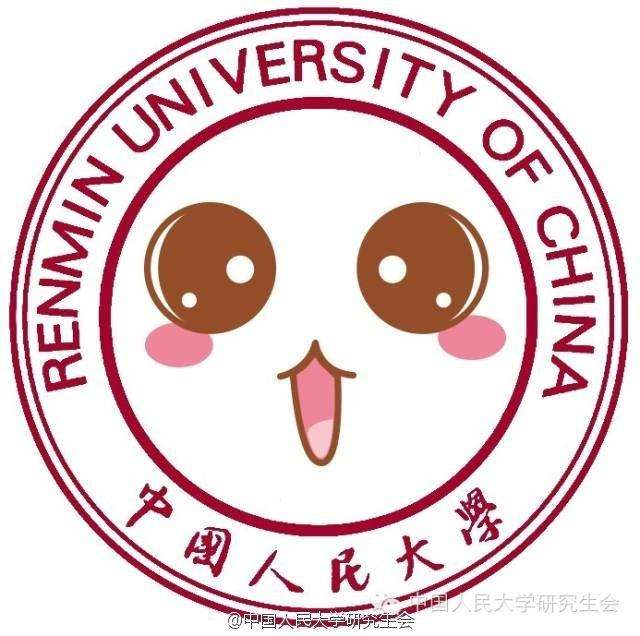

1992年从人大毕业后曾在日本、德国学习广告设计，2002年创办了知行堂广告有限公司，现为该公司执行董事兼创意总监。他曾为新华书店、银行、企业做过整体形象设计，还承接了中法文化年等多项涉外大型文化活动的总体形象设计。早在1996年，章叶青就以校友的身份向母校提出修改校徽的建议，并递交了规划书。2000年，当时的校党委副书记曾主动找他了解形象设计方面的相关知识，令章叶青深受鼓舞，他主动写了策划报告，做了几套设计方案，表示将义务为母校设计新校徽。2002年上半年，章叶青设计了后来采用的新校徽方案，并将他设计的新校徽与老校徽进行详细对比分析。他认为，新校徽的优点一是体现了与时俱进的时代要求，体现了建设以人文社会科学为主的世界一流大学目标的新理念；二是主概念突出。
章叶青设计的新校徽由三个篆字体的「人」组成，简洁而又具有浓厚的中国文化的味道，体现了三层涵义：一是人民大学要为人民办学；二是以人为本培养和造就人才；三是以人文社会科学为主。章叶青说，他在网上看到一个人大学生自己办的网站，叫「天地人大」，这给他很大启发：天大地大，人最大。「中国人民大学」，他觉得这六个字中最重要的就是一个「人」字，在设计过程中他便决定以「人」字为主要特征做文章。「人大、人本、人文」、「三人行必有我师」、「三人成众」等思路引导他设计出以三个「人」为主要元素，并在字体上取材篆书。在图形的选择过程中，章叶青了解了许多国外著名大学的校徽，他发现这些主流大学的校徽图案主要集中于圆形或盾形。考虑到圆形更符合中国人的审美观，而且老校徽 用的也是圆形，他决定在新校徽上也采用圆形。在颜色上，新校徽的红色，取自于宫墙的深红颜色。章叶青认为这种颜色显得理性、大气、包容，具有中国特色。他把这一颜色确定为校徽的专用色，并称之为「人大红」。就像鲜艳的哈佛红在美国成为资本经济的某种象征一样，他希望人大红今后成为中国人文社会科学的学术象征。
经学校研究，新校徽于2002年10月1日起试用，一年后正式启用。2003年11月1日，人大65周年校庆时得到广泛使用并得到校友们的认同。